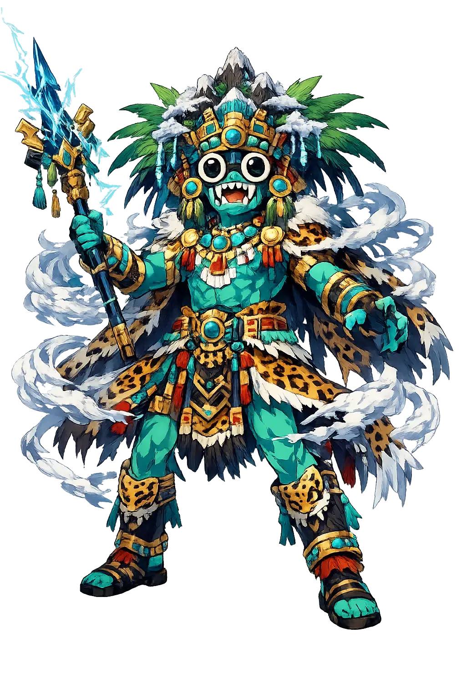
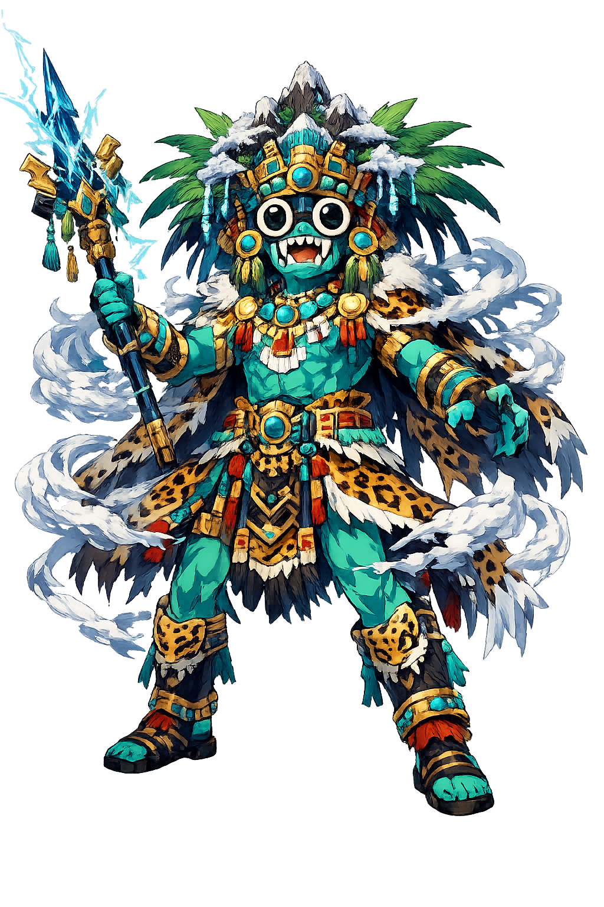

Unicode restoration and ASCII comparison
Tlāloc
The name survives only in scholarly transliteration. Tlāloc is the standard Nahuatl romanisation, documented in academic sources — “He who is made of earth”. Its macron-length vowels preserve distinctions lost in plain ASCII.
No indigenous writing system is securely attested for individual nahuatl names. The form shown is a modern scholarly transliteration.
tlaloc
Reduced to plain tlaloc, the name loses everything that made it specific: macron-length vowels. What remains is an ASCII string that machines can parse but that no longer speaks with its original voice.
Tlāloc
The Unicode restoration recovers what ASCII flattened. Tlāloc restores macron-length vowels, returning the name to its original written dignity. The domain encodes to Punycode, but the browser displays the truth.
Tlāloc.com → xn--tlloc-gwa.com
The non-ASCII characters in Tlāloc are encoded while the ASCII remains visible. To the DNS, it is Punycode. To humanity, it is Tlāloc.
How Tlāloc is preserved in writing
No indigenous writing system is securely attested for individual nahuatl names. The form shown is a modern scholarly transliteration.
Contribute scholarly provenance →Owned, ideal, and ASCII forms of Tlāloc
Tlāloc
The live temple domain — tlāloc.com.
tlaloc
The plain ASCII fallback — what DNS and legacy systems see.
How Tlāloc was spoken
Water, Lightning, and Agricultural Life
Tlāloc is the ancient god of rain, lightning, and mountain water. His goggle eyes and jaguar fangs mark him as a being from before the Aztec empire, worshipped at Teotihuacan centuries before Tenochtitlan rose. Without his favour, maize withered and the Fifth Sun turned hostile.
His paradise for those who died by water, lightning, or water-borne disease.
He lives in caves and snow-capped peaks where clouds are born and rain is stored.
His multitude of assistants, the little rain gods who brew storms in mountain jars.
Rain is the precondition of corn; Tlāloc controls the timing of planting and harvest.
Stories of Tlāloc
Tlāloc's myths turn on a single terrifying truth: the same rain that feeds can also drown, strike, or rot. He is generous and punitive in equal measure.
Colonial accounts make Xōchiquetzal, the young goddess of flowers, weaving, and sexual love, the wife of Tlāloc before Tezcatlipoca abducted her for her beauty (Leyenda de los Soles). The tradition bound the green growing world to the water that sustains it. But the marriage was also volatile, for Tlāloc's realm is one of thunder as much as gentle rain.
The Fourth Sun, the Sun of Water (4-Water), was ruled by Tlāloc's consort Chalchiuhtlicue, and it ended in a flood that lasted fifty-two years. Humans were transformed into fish; the cosmos had to be remade. Water, Tlāloc's gift, became the instrument of annihilation.
Child sacrifices were offered to Tlāloc, especially during drought. The children, selected for their beauty, were believed to become Tlaloque who would bring rain from the mountain caves. It is one of the most horrifying aspects of Aztec religion, and one of the clearest evidence that Tlāloc was never a tame fertility spirit.
Tlāloc is the god who holds back what we need most. Rain is not guaranteed; it is a negotiation conducted with ritual, sacrifice, and humility. In that sense Tlāloc is the most honest of agricultural deities: he does not promise abundance in exchange for virtue alone; he demands attention to the relationship between human need and natural limit.
Enter Extended Lore